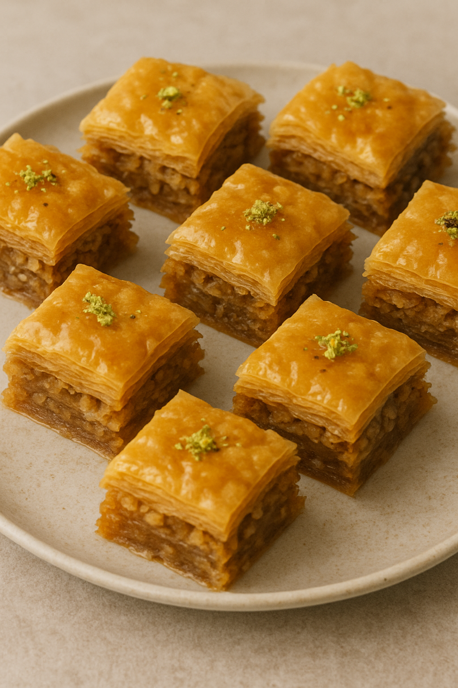

Baklava

Layered phyllo pastry with spiced nuts and honey syrup.
Yield: About 24 pieces |
Prep Time: 45 minutes |
Cook Time: 35–45 minutes
Baklava Ingredients
Nut Filling & Pastry
- 6 ounces shelled pistachios, coarsely chopped
- 6 ounces walnuts, coarsely chopped
- 6 ounces hazelnuts, coarsely chopped
- ¼ cup sugar
- 1–2 tablespoons ground cinnamon
- Large pinch ground cloves
- 1 (16-ounce) package phyllo dough, thawed
- 1½–2 sticks unsalted butter (12–16 tablespoons), melted
Honey Syrup
- ¾ cup sugar
- 1 cup water
- 1 cup honey
- 1 tablespoon orange extract (optional)
- 5 whole cloves
- Juice of 1 lemon
Directions
- Preheat oven to 350°F (175°C).
- For the syrup, heat sugar and water in a saucepan until dissolved. Add honey, orange extract (if using), and whole cloves. Bring to a boil, then simmer about 25 minutes. Remove from heat, cool to lukewarm, stir in lemon juice, and discard cloves.
- For the nut filling, pulse pistachios, walnuts, and hazelnuts in a food processor until coarsely chopped. Mix with sugar, cinnamon, and ground cloves.
- Brush a 9×13-inch pan with melted butter. Keep phyllo covered between towels. Layer about one-third of the sheets in the pan, brushing each with butter.
- Spread half of the nut mixture over the phyllo. Repeat with another third of phyllo and remaining nuts, then finish with the last third of phyllo, brushing each layer and the top with butter.
- Cut into diamonds or squares (about 24 pieces). Bake 35–45 minutes, until golden and crisp.
- Immediately pour cooled syrup evenly over the hot baklava. Let sit at least 1 hour before serving.